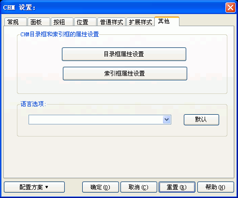

您可以通过在编译设置对话框里按"CHM设置..."按钮, 然后在"CHM设置"对话框里选取"其他"跳格看到这个对话框。关于这个对话框的使用请看下面的具体描述.

CHM目录框和索引框的属性设置 / 目录框属性设置:
在这里可以设置CHM的目录框的各种属性.
参见：
目录框属性设置对话框
- 常规
目录框属性设置对话框
- 样式
CHM目录框和索引框的属性设置 / 索引框属性设置:
在这里可以设置 CHM的目录框的各种属性.
参见：索引框属性设置对话框
语言选项:
决定CHM文件的语言设置.
当CHM文件在一个不同语言的机器上被打开时，系统会尝试以CHM里设置的语言字符集选项来显示CHM-这只涉及到CHM的界面，并不会自动翻译您的正文内容。
按“默认”按钮，程序会自动取得您当前系统所使用的语言字符集设置。
| 版权所有 © 2000-2007 国华软件 保留全部权利. |